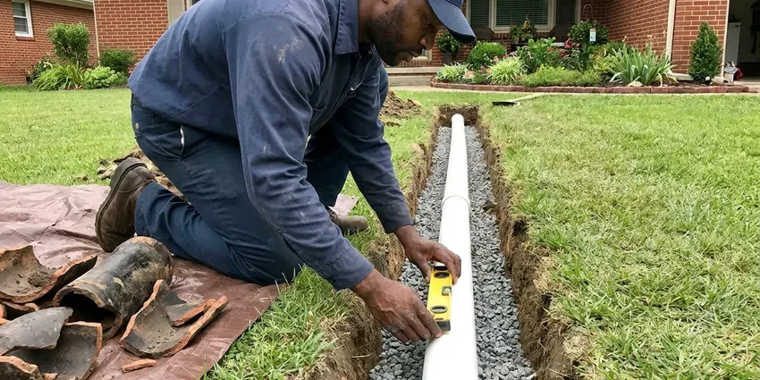

Trenchless Sewer Line Repair in Eagan, MN
CNV Plumbing does trenchless sewer repair in Eagan, MN with cured-in-place liners and pipe bursting, chosen by what the camera shows.
- Small Access Pits Only
- No Trench Across the Yard
- Before & After Video
- Driveways Left Intact

Need Trenchless Sewer Work in Eagan, MN?
We show you the video and price the repair before any work begins.
Trenchless Sewer Line Repair in Eagan, MN With Lining and Pipe Bursting
CNV Plumbing offers trenchless repair as the alternative to digging. A traditional replacement means a trench from the foundation to the city tap, usually four to eight feet deep, and then weeks of restoring sod and concrete. Trenchless skips most of that. Access is one or two small pits, and sometimes just the existing cleanout.
Our expertise includes:
- Recorded Video Pipe Inspection
- Camera inspection with depth and location tracking
- Cured-In-Place Pipe Lining

Additional Plumbing Repair Services in Eagan, MN
We offer expert plumbing repair services across Eagan, MN to stop leaks, clear blockages, and keep every fixture working the way it should.


Customers
Why Choose CNV Plumbing for Trenchless Sewer Line Repair in Eagan, MN?
Trenchless repair often costs about the same as digging once you add back concrete and sod. It also wraps up sooner, usually in a day instead of a week. There is no open hole sitting in the yard over the weekend, and there is no settling dirt to top off next spring when the backfill sinks.
- Video Proof, You see the damage before the repair and the completed pipe afterward.
- Less Restoration, Small access points mean less concrete cutting and less sod to replace.
- Long Service Life, Liners and HDPE pipe are rated for a 50-year design life when installed right.
Citywide Coverage
Across Eagan, the drive time to a job is usually under an hour, so a camera inspection can often happen the same day you call. We cover rentals too. Property managers get the video by email.
Experienced Team
Licensed plumbers lead every trenchless crew, and they keep up with new liner products as manufacturers update resins and equipment each year. Each tech on the truck has passed a background check. They wear boot covers inside.
Safety-First Approach
Open pits get barricades and covers at the end of each day. Nobody falls in. Anything deeper than five feet gets shored or sloped, which is the federal OSHA trench rule and the one we follow on every burst regardless of the depth of the line.
Trusted Certified Eagan Plumbing Services Professionals
At CNV Plumbing, we take pride in licensed, certified plumbing services throughout Eagan, MN. Credentials matter in this trade. Every repair, install and maintenance visit follows strict safety and quality rules, and the plumbers doing the work carry recognized industry credentials.
Call Us Now PHCC Plumbing Contractor Recognition
PHCC Plumbing Contractor Recognition Better Business Bureau (BBB) Accreditation
Better Business Bureau (BBB) Accreditation Angi Certified Pro
Angi Certified Pro ISO 9001 Quality Management Certification
ISO 9001 Quality Management CertificationSewer Lining and Pipe Bursting in Eagan, MN
Commercial Trenchless Sewer Line Repair in Eagan, MN
Restaurants feel a sewer failure fast, because grease and a dish machine put heavy load on a 4- or 6-inch building drain all day. We can line at night. A trench through a parking lot means lost spaces and a blocked entrance for a week or more. A liner installed from a cleanout skips all of it.

Cost Comparison of Trenchless vs Traditional in Eagan, MN
Depth changes the math. A line two feet down in open lawn is often cheaper to dig than to line, but a lateral eight feet deep that runs under the driveway and a porch costs far more to excavate than to burst or line from two pits. You get both prices on paper. Then you pick.
Perma-Liner Lining Equipment in Eagan
Perma-Liner makes inversion drums and epoxy systems for lining 2- to 6-inch drain lines, which covers most of what we see in houses. The setup is compact enough to fit in a pickup bed and roll through a side gate. Compact gear matters on tight lots. Resin gets mixed on site and timed to the length of the run, so it does not start curing before the liner is in place.
Trenchless vs Traditional Sewer Repair Costs in Eagan, MN
Compare total cost, not just the plumbing line on the invoice. A dig job looks cheaper on paper, until you add saw-cutting the driveway and pouring new concrete over a trench that may run 50 feet. Trenchless avoids most of that. Sod and sprinkler repair add up too.
Cured-In-Place Pipe Lining in Eagan, MN
CIPP stands for cured-in-place pipe. We wet out a felt tube with epoxy resin, invert it into the cleaned line with air pressure, and hold it against the old pipe wall until the resin hardens. Cure time runs a few hours. The finished liner seals cracks and leaking joints in the original pipe.
Emergency Trenchless Sewer Calls in Eagan
A sudden collapse usually shows up as every drain in the house backing up at once, often into the lowest tub or floor drain. First we restore flow. Then the camera shows whether the line can be lined or needs a burst. A fully crushed section sometimes needs a short dig before anything else can happen.
Perma-Liner and NuFlow Trenchless Systems in Eagan
Perma-Liner and NuFlow both make lining systems we use, each with its own resin chemistry and installation equipment. Both are built to ASTM standards for cured-in-place pipe. The brand matters less than the prep, because a liner bonded to a dirty, scaly pipe wall will not hold the way the manufacturer rates it. We clean to bare pipe first.

Sewer Camera Inspections for Trenchless Repair in Eagan
Every trenchless job starts with a push camera fed in from the cleanout or a pulled toilet. The screen shows the inside of the pipe live, and a sonde in the camera head lets us mark the exact spot on the ground above it. That tells us the depth. No guessing where to dig.
Trenchless Sewer Repair Near Me in Eagan, MN
Basements are the norm, so drain tile, sump pumps and foundation drainage are central to keeping homes dry. Hard or rocky ground makes digging slow and expensive, which is where trenchless pays off. Rock means a breaker on the excavator. Lining from a cleanout avoids that, and a burst only needs two small pits dug by hand or with a mini excavator.
Local crews know the housing stock. In older parts of Eagan we expect clay laterals with roots at every joint, while newer subdivisions tend to have PVC that cracked from settling or got crushed during construction by heavy equipment. It tells us what to look for on the first camera run. The truck is already stocked with the cutter heads and liners those pipes need.
CNV Plumbing at a Glance
- Licensed and insured plumbers serving Eagan, MN
- 24/7 emergency service with same-day scheduling
- Upfront, flat-rate pricing before work begins
- 4.8-star rated by 501+ Minnesota customers
Eagan Map
Eagan Information
- Population
- 67,396
- Area codes
- 612/507/320
- Service area
- Eagan and communities within 40 miles
- Nearby
- Apple Valley, Burnsville, Bloomington, St. Paul
Plenty of older homes in Eagan, MN still drain through clay, cast iron or Orangeburg pipe running beneath trees and concrete, which is exactly where trenchless repair saves the most digging.
Expert Services
Call CNV Plumbing for honest, reliable plumbing from people who know the trade in Eagan, MN.
Our Specialized Plumbing Services in Eagan, MN
At CNV Plumbing, you get every kind of plumbing service from one company across Eagan, MN. From leak detection to full system installs, our team works fast and charges fair prices on homes and commercial properties alike. Explore our core services below:


How Our Trenchless Sewer Line Repair Works in Eagan, MN
Most trenchless jobs follow the same three or four steps.
Request a Quote
Call (612) 712-9569 to book a sewer camera inspection. We record the video and flag problem spots on the surface with a locator.
Review Repair Options
We go through the footage with you and explain whether lining, a point repair or bursting fits. You get a written price for each workable option.
Repair and Verify
We clean and prep the line, finish the repair and backfill any pits. A last camera run verifies the new pipe is sound.
Frequently Asked Questions About Trenchless Sewer Line Repair in Eagan
Expect roughly $80 to $250 per foot for trenchless sewer repair in Eagan, MN, depending on the method and the pipe diameter. For a typical 50-foot residential line, that works out to about $4,000 to $12,500. That price covers labor and materials. Permits are listed separately.
Probably, if the pipe still holds its round shape. Lines with cracks or roots are usually good candidates for a liner, and so does cast iron with surface corrosion, as long as there is enough sound wall left to descale and bond to. Collapsed lines need bursting instead.
It handles cracks, fractures, root intrusion and small offsets well. A disintegrated pipe is another story. A deep belly that holds water or a badly separated joint may need a spot excavation, since a liner follows the shape of the host pipe and will copy the sag right along with it. The video decides.
No. A fully collapsed section, or a pipe so offset that a liner cannot pass, may need a short dig at that spot. The camera tells us which case you have. Sometimes it is a mix, with a small excavation at one bad section and a liner through the rest of the run to the street.
Repeated backups, gurgling toilets, sewage odor, soggy patches in the yard and slow drains across the whole house are the common ones. A camera inspection confirms the cause.
Roots cannot get into the lined section. A properly installed liner has no joints, so they have no gap to enter.
One to three days covers most jobs, compared with a week or more for a full dig. Lining a short lateral can finish in a single morning. Longer runs and bursts take more time, mostly for pit work and fusing the new HDPE pipe into one length before the pull. Cure time adds a few hours.
No, not in any practical sense. Lining takes an inversion drum, a calibrated resin mix and a camera to check the work, and pipe bursting takes a hydraulic puller and an HDPE fusion machine that most plumbers do not even own. A licensed plumber has to pull the permit anyway.
What Our Customers Say About Our Plumbing Experts

Brian W.
I smelled gas behind the dryer and called right away. The plumber found a corroded flex connector, replaced it, and pressure tested the whole line before turning the gas back on. He let me watch the gauge hold steady for fifteen minutes.
Gas Line Repair · Lakeville, MN
Kevin O.
Before buying our house I paid for a sewer camera inspection. CNV Plumbing found a belly in the line that held standing water about forty feet from the cleanout. We used the video to get the sellers to fix it before closing.
Sewer Camera Inspection · Apple Valley, MN
Sofia M.
Two new toilets went in during one visit. The tech set them on new wax rings and swapped the old supply lines. He also noticed our bathroom faucet dripping and replaced the cartridge while he was there. No mess left behind.
Toilet Installation · Edina, MN
Patricia H.
We had a slab leak that two other companies could not find. CNV Plumbing located it in under an hour with a listening device. They rerouted the line through the attic instead of breaking up the floor, so we kept our kitchen tile.
Slab Leak Repair · Bloomington, MNRobert G.
The camera showed a full break in our clay sewer line near the street. CNV Plumbing replaced it with a trenchless pipe burst, so the only digging was two small pits in the yard. They let us watch the footage before and after.
Sewer Line Replacement · Burnsville, MNDiane F.
My kitchen faucet had dripped for months and I finally got tired of hearing it at night. CNV Plumbing came out the next morning, replaced the cartridge and the O rings, and tightened a loose base that was letting water under the sink.
Faucet Repair · Bloomington, MN